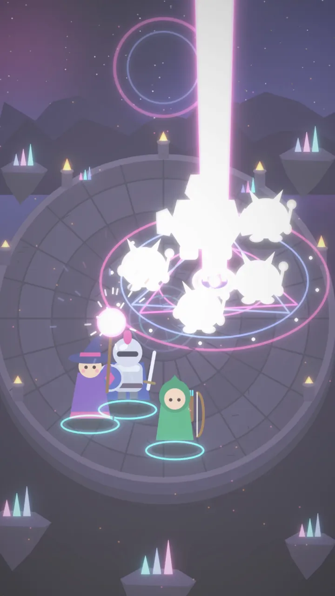
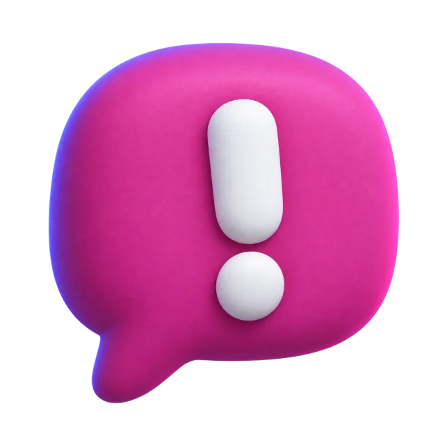
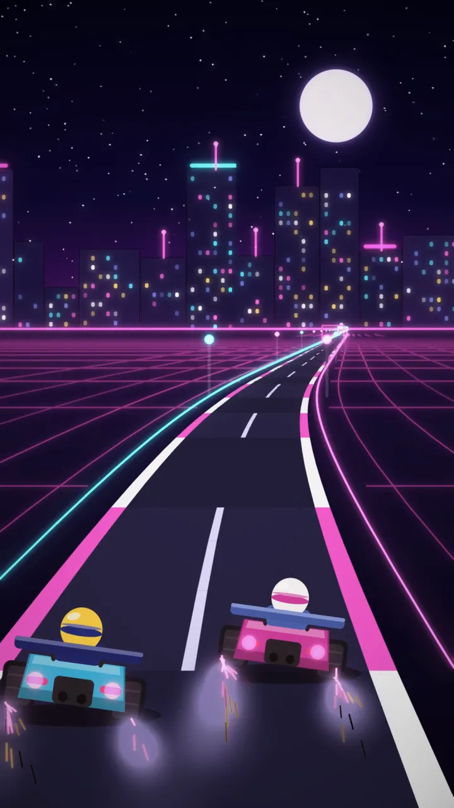
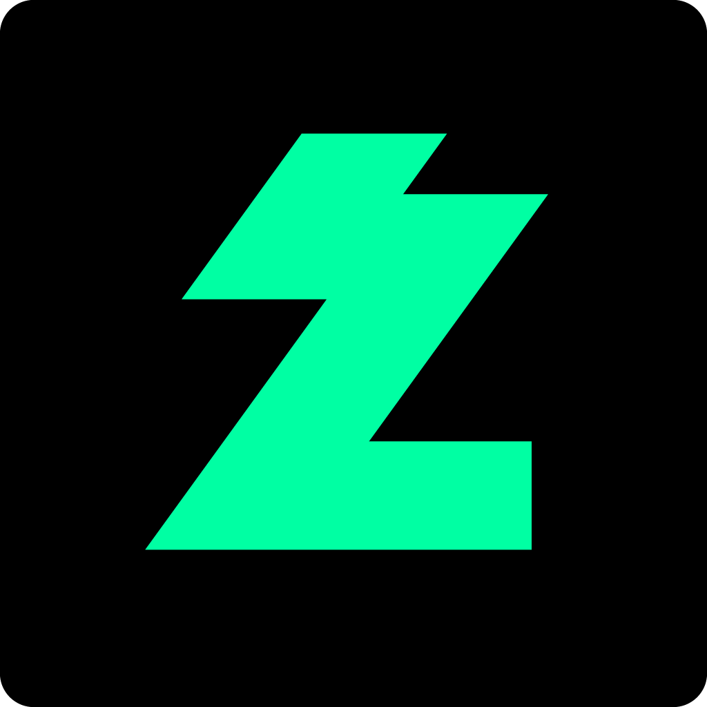
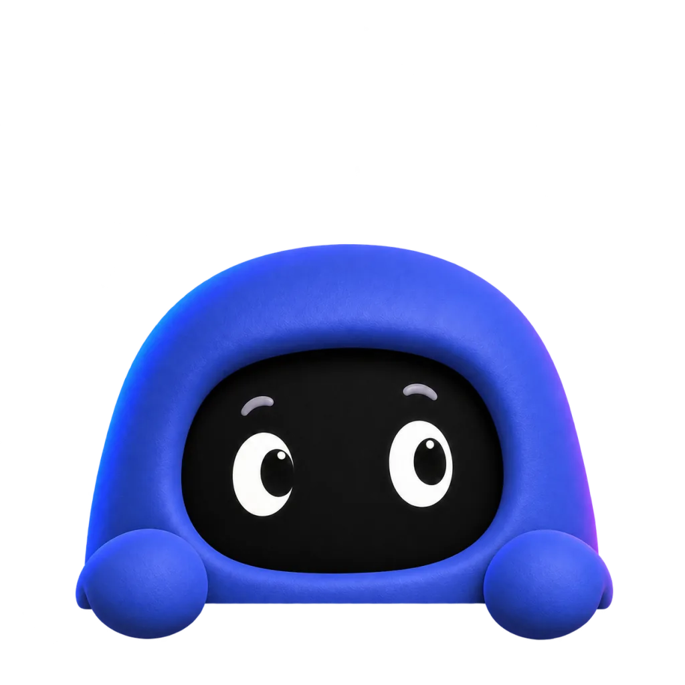

97점 채팅 급증 0:42
마지막 한타 역전
검토 대기방금
편집업로드
스트리머라면
자동 하이라이트 감지
메시지 수가 아니라 말한 사람 수가 갑자기 늘어나는 순간을 봐요. 그 장면이 라이브 대시보드에 카드로 떠요.

97점 채팅 급증 0:42
작동 방식
플러그인을 설치하고 웹에서 받은 8자리 코드만 넣으면 끝이에요. 본방 인코더를 같이 써서 영상 인코딩이 추가되지 않아요.
채팅이 몰리는 순간마다 점프카드가 라이브 대시보드에 쌓여요. 직접 찍고 싶은 장면은 핫키로 표시할 수 있어요 준비 중.

구간은 5초에서 3분까지, 세로 쇼츠 레이아웃 5종 중에서 골라요. 방송이 아직 진행 중이어도 괜찮아요.
레이아웃
렌더가 끝나면 스트리머 채널에 비공개로 올라가요. 확인한 뒤 공개로 바꾸면 돼요.
멀티트랙 오디오
마이크·게임·디스코드·BGM이 트랙 6개로 따로 들어와요. 내보낼 때 BGM 트랙만 끄면 돼요.
함께 만드는 클립
채널 연동과 플러그인 설정은 처음 한 번만. 매 방송 다시 설정할 게 없어요.
스트리머가 초대하면 그 채널의 하이라이트를 편집하고 업로드까지 맡을 수 있어요. 편집자는 비용이 들지 않아요.
라이브 중에 쌓이는 점프카드를 스트리머와 편집자가 같은 대시보드에서 봐요.
더 알아보기
라이브 중에도 1시간 전 장면까지 돌려 보고 바로 잘라요.
방송이 끝난 뒤에도 놓친 장면을 같은 편집기로 클립으로 만들어요.
게임 화면과 캠을 쇼츠 비율로 배치하는 레이아웃을 골라요.
렌더할 때 음량을 −14 LUFS에 맞춰서, 클립마다 소리가 들쭉날쭉하지 않아요.
채팅이 조용한 장면도 단축키 한 번으로 카드로 남겨요.
지원 플랫폼

치지직지원FAQ

OBS Studio와 치지직 채널, 클립을 올릴 YouTube 채널이 있으면 돼요. 로그인은 Google 계정으로 해요.
본방 인코더를 함께 써서 영상 인코딩이 추가되지 않아요. 다만 PokeClip으로도 같은 방송을 보내기 때문에 업로드 대역폭은 송출 한 줄만큼 더 필요해요.
아니요. YouTube에 비공개로 올라가요. 확인한 뒤 공개로 바꾸면 돼요.
지금은 치지직을 지원해요. SOOP은 준비 중이에요.
아니요. 편집자는 무료예요. 스트리머가 초대하면 그 채널의 클립을 편집하고 올릴 수 있어요.
채팅이 적으면 자동 감지가 부정확할 수 있어서, 엉뚱한 카드를 띄우는 대신 직접 표시하는 방식을 안내해요.
OBS 플러그인은 Windows를 먼저 지원해요. macOS 빌드는 시험 단계예요.